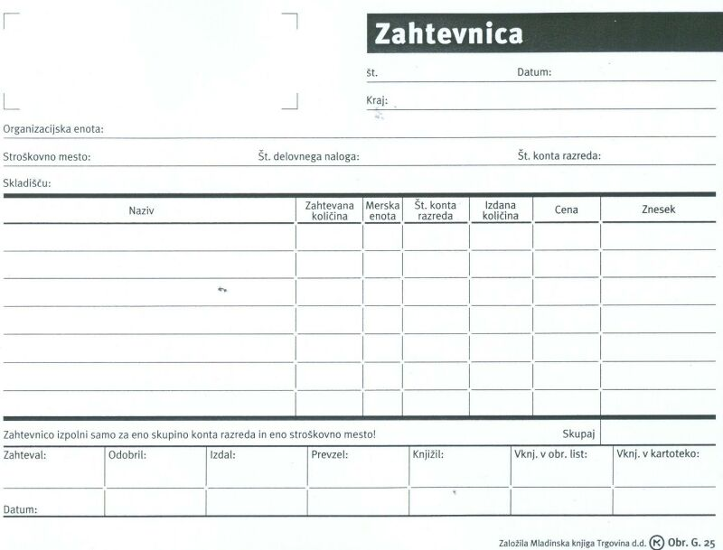

|
Denimo, da potrebuje ena od organizacijskih enot neke organizacije za svoje delo doloèen material. Kot primer lahko izberemo projektni teden programa "Raèunalnikar". Organizacijska enota je srednja šola ZUIM Kamnik oziroma natanèneje programski uèiteljski zbor (PUZ) omenjenega programa. Za izvedbo projektnega tedna potrebuje ta organizacijska enota med ostalim tudi štiri baterijske vložke ali galvanske èlene z oznako AA. Z digitalnim fotoaparatom ameravajo namreè posneti veliko slikovnega gradiva, ki jim bo pomagalo pripraviti poroèila o Kamniku, njegovih znamenitih osebnostih in zgodovini. Želene baterije lahko prevzamejo èlani PUZ-a v tehnièni službi ZUIM, oziroma v njenem skladišèu. Dokument, ki beleži zahtevo doloèene organizacijske enote po doloèenem materialu, se imenuje zahtevnica. Zahtevnico lahko napiše vodja organizacijske enote, ki potrebuje doloèen material ali opremo. V našem primeru je to vodja PUZ-a. Oglejmo si nekaj podatkov v splošni zahtevnici: 1. Številka zahtevnice - obièajno gre za vrstno številko, po kateri razvršèamo in razlikujemo zahtevnice med seboj. 2. Datum in kraj - ko in kjer je zahtevnica zapisana. 3. Organizacijska enota - tista, ki potrebuje doloèen material. 4. Stroškovno mesto - bolj natanèen opis mesta organizacije, kjer bo zahtevani material porabljen ali uporabljen. 5. Številka delovnega naloga - že v uèni enoti o delovnem nalogu smo ugotovili, da moramo v organizaciji za vsako nalogo napisati delovni nalog in jo tako dokumentirati. Material, ki ga z zahtevnico zahtevamo, bomo uporabili in porabili v eni od takih dokumentiranih delovnih nalog. 6. Število konta razreda - KONTO je knjigovodski raèun, ki beleži stanja in spremembe v premoženju organizacije. RAZRED KONTA je ena od skupin kontov s skupnimi znaèilnostmi, ki beleži stanje doloèene vrste premoženja. 7. Zahteval: - podpis vodje organizacijske enote, ki potrebuje material. 8. Odobril: - podpis vodje organizacijske enote, ki izda potrebni material. 9. Izdal: - podpis delavca organizacijske enote, ki zahtevani material izda. 10. Prevzel: - podpis delavca organizacijske enote, ki potrebni material prevzame.  Slika 1: Splošni obrazec za zahtevnico. 1. Vprašanja za usmerjanje pozornosti in usvajanje novih besed: 1. Kako se imenuje obrazec, s pomoèjo katerega organizacija beleži in dokumentira potrebe in zahteve posameznih organizacijskih enot po doloèenem materialu? 2. Naštej podatke, ki jih vsebuje preglednica zahtevnice. 3. Kakšen je naziv zahtevanega materiala v primeru iz besedila te uène enote? 4. Kolikšna je zahtevana kolièina materiala v primeru iz besedila te uène enote? 5. Kakšna je merska enota zahtevanega materiala v primeru iz besedila te uène enote? 6. Kakšna je tipska oznaka obrazca za zahtevnico, ki smo jo spoznali v tej uèni enoti? 7. Kdo je izdajatelj in založnik splošnega obrazca za zahtevnico, ki ga vidimo na sliki v tej uèni enoti? 2. Zapiši od ene do pet kljuènih besed, ki povzemajo vsebino te uène enote. 3. Vprašanja za razmislek, ponavljanje in povezovanje z lastno izkušnjo: 1. Kdo bi se lahko podpisal v okencu "Zahteval:" zahtevnice za primer, ki smo ga spoznali v tej uèni enoti? (Kdo je vodja PUZ-a programa "Raèunalnikar" na srednji šoli ZUIM Kamnik?) 2. Kdo bi se lahko podpisal v okencu "Odobril:" zahtevnice za primer, ki smo ga spoznali v tej uèni enoti? (Kdo je vodja tehniène službe v ZUIM Kamnik?) 3. Kdo bi se lahko podpisal v okencu "Izdal:" zahtevnice za primer, ki smo ga spoznali v tej uèni enoti? (Kdo dela v tehnièni službi ZUIM kamnik?) 4. Kdo bi se lahko podpisal v okencu "Prevzel:" zahtevnice za primer, ki smo ga spoznali v tej uèni enoti? (Kdo so uèitelji v programu "Raèunalnikar" na srednji šoli ZUIM Kamnik?) 4. Domaèa naloga: V enem do petih stavkih zapiši, kaj ti je v tej uèni enoti najbolj ostalo v spominu. |